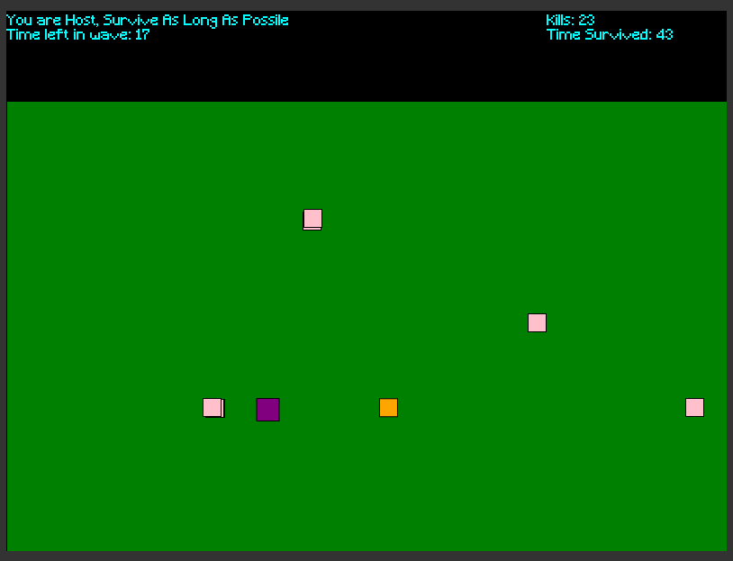
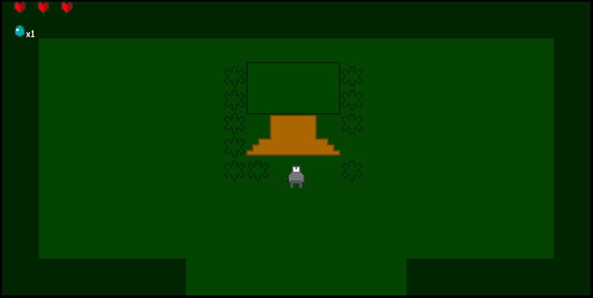

I am an AP and honors student in highschool. I am interested in robotics and progrmaing, and am on the school robotics team where I am a programmer.
Additionally I am in the App Acadamy, which is a prgoramming pathway where I have created several games that you can play here.

Zombies squared is one such game. You have to avoid pink and orange zombies while surviving as long as possible. After each wave you can upgrade your player. You can move using WASD and shoot using arrow keys. The project uses P5.js for graphics and Sockets.io for connectivety. You can play the game
herePUT RESEARCH PAPER

Another project I have made is Tale of Zol, which is a Legend of Zelda like game. I created this as my final project in the 10th grade. Defeat the bosses to gain more health and defeat the evil wizard! It only uses Javascript, and all of the map data is in a array of objects. One issue is that the rooms are actually images so having a slow internet connection can have these take a while to load. You can move using WASD or arrows keys, and space bar attacks. You can play the game
here